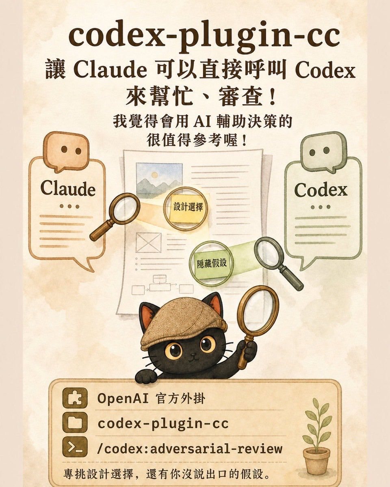

OpenAI 在 2026 年 3 月推出了官方外掛 codex-plugin-cc，讓 Claude Code 可以直接呼叫 Codex 來審。這剛好接上我平常的工作方式：重要的事情交給 AI 之前，我習慣先叫另外一家 AI 來審一次。原因是同一個 AI 檢查自己寫的東西，它會帶著同一套偏見再讀一遍，錯的前提在它眼裡依然成立。這篇用一次真實的互審過程說明這件事：三輪退件九項，其中三項是真的寫錯了事實，但審查的那一家自己也錯了兩項。文章會講這個外掛怎麼裝、能做到什麼與做不到什麼，拆解跨家審查的機制，以及三個從零成本到流程化的具體做法。
- 每天用 AI 寫提案、文案或報告，交出去之前總有點不放心，但也不知道該怎麼查
- 要把 AI 產出的內容給主管或客戶看，最怕裡面有錯被當場抓包
- 一個人工作，沒有同事會在你交件之前幫你看一眼
- 一句可以直接複製的互審提示詞，今天就能用，不用裝任何東西
- 一張處理表：兩家意見一致、只有一家提到、兩家互相矛盾，各該怎麼處理
- 一個判斷標準：什麼情況值得花雙倍時間跨家審，什麼情況不用
OpenAI 推出了一個讓 Claude Code 直接呼叫 Codex 的外掛
2026 年 3 月，OpenAI 發布了官方外掛 codex-plugin-cc（原始碼公開在 GitHub ↗），把「叫另一家 AI 來審」變成一個指令。裝好之後，在 Claude Code 裡面打一行指令，Codex 就會去審，審完把結果送回來。
這剛好接上我平常的工作方式。遇到重要任務，或者要做決定的時候，我都會叫另外一家 AI 再審一次。這件事我自己做了一段時間，做法一直是手動的：從一家複製貼上到另一家，再把意見貼回來。
所以這個外掛的實際作用是省掉搬運。底層還是同一支你本機裝的 Codex，同一組帳號、同一份用量額度。它沒有讓連線變得更穩，變順的是流程。
很多人會以為裝了官方外掛就等於升級。實際上升級的是「你不會忘記做這件事」，還有「結果不會在複製貼上的過程中掉字」。
八個指令裡我最常用的是 adversarial-review，中文可以理解成對抗式審查：它的任務不是幫你確認，是專門挑戰你的設計選擇跟你沒講出來的假設。
怎麼裝、怎麼用
在 Claude Code 的對話框打這三行：
/plugin install codex@openai-codex
/reload-plugins
裝完打 /codex:setup 檢查狀態，要審就打 /codex:adversarial-review。前提是你本機已經裝好 Codex 也登入過，這個外掛只是橋，真正做事的是本機那一支。
先分清楚哪支能用在哪。/codex:review 與 /codex:adversarial-review 都是拿版本控制的變更當審查對象，只能在 git 資料夾裡跑。要審文章、企劃、規則這類不在 git 裡的東西，改用 /codex:rescue，並且在指令後面把「唯讀、不准動任何檔」跟你要它看的角度寫清楚。
為什麼我不會只問一個 AI
這跟信不信任手上這一家沒有關係。原因在於同一個 AI 審自己寫的東西，它的偏見會跟著一起帶進去。它認為對的地方，複查的時候還是會認為對。
換一家來看，比較不會漏掉盲點。
我的主力是 Claude，日常寫作、規劃、整理都在這裡。碰到重要的東西，我會叫 Codex 來審一次。兩家模型的訓練、系統設定、可用工具與推論脈絡都不完全相同，所以它們看同一份東西，關注的重點會不一樣。
為什麼同一家 AI 自我檢查，容易漏掉同一個錯誤前提
這件事的機制其實不複雜。
AI 產生答案的時候，是根據它當下理解的脈絡往下推。如果它一開始就把某個前提記錯了，後面每一步都會建立在那個錯誤上，而且每一步都會看起來很合理。
你回頭叫它「檢查一下有沒有錯」，它重新讀一遍，讀到的還是同一份脈絡，用的還是同一套判斷。錯字、前後矛盾這類表面問題它抓得到，但那個錯誤的前提在它眼裡依然成立，所以它會告訴你「檢查過了，沒有問題」。
是它沒有第二個視角可以用。換一家 AI 就不一樣，它沒有參與前面的推論，它是拿著結果回頭看，比較容易問出「這個前提是哪來的」。要提醒的是，換一家增加的是不同視角，它不保證獨立，也不保證正確。
- AI 寫的東西我怎麼確認它是對的？抓到 AI 偷懶之後，我把它寫進流程規則 那篇講的是單一 AI 出錯時怎麼抓，這篇往下一層，講抓不到的時候找另一家來看。
一次真實的互審：三輪，退我九項
前幾天我改了一份自己的工作規則。改完覺得沒問題，就丟給 Codex 審。
第一輪，退六項。
其中一項是我在兩個地方重複寫了同一件事，這在我自己的規則裡是明文禁止的，我寫的時候完全沒察覺。另外兩項更嚴重，是我寫錯了事實：我寫「這些指令都必須本人親自輸入」，實際上有兩個指令不是；我寫「在沒有版本控制的資料夾裡會審不出東西」，實際上是直接被擋，根本跑不起來。
我沒有直接照改。我一項一項自己去驗：去讀那些指令的設定檔、去實際跑一次看它回什麼。驗完確認 Codex 說得對。
改完再送審，第二輪又退三項，還多指出三個我沒想到的問題，包括一個真的會出事的：我寫的指令範例如果直接套用，遇到特殊符號會被系統當成指令執行。
第三輪才通過。
但它自己也錯了兩項
這是我覺得最該講的一段。
Codex 那九項退件裡，有兩項我實測之後不成立。它憑著讀原始碼推論出一個結論，聽起來很有道理，但我實際跑一次，行為跟它說的不一樣。
| 它的主張 | 我怎麼驗 | 實際結果 | 採納嗎 |
|---|---|---|---|
| 「這些指令都必須本人親自輸入」是錯的，有兩支不是 | 去讀八支指令的設定檔，看有沒有禁止旗標 | 只有六支標了禁止，另外兩支確實沒有 | 採納，我改了 |
| 非 git 資料夾不是「審不出東西」，是直接被擋 | 實際在沒有版本控制的資料夾跑一次審查指令 | 回一行錯誤訊息就結束，根本沒開始審 | 採納，我改了 |
| 某段描述與原始碼行為不符（它讀原始碼推論的） | 照它說的情境實際跑一次 | 行為跟它說的不一樣，我原本寫的才對 | 不採納，維持原樣 |
第三列就是我說的那種情況。它的推論聽起來很有道理，如果我當時直接照改，我會把一個正確的描述改成錯的。
這種錯比原本的錯更難發現，因為它披著「已經跨家審查過」的外衣。
決定還是我下的
我對 AI 互審的定位很清楚：它把我看不到的角落翻出來，讓我自己去驗。
它做的事情是讓我在下決定之前，多看到幾個角度。
一個人工作最容易掉的坑，是把 AI 的答案當結論。兩家互審之後你會發現一件事：兩邊的分歧特別值錢。一致的地方優先查，分歧的地方一定要查，兩種都不能直接當成結論。
所以互審真正的產出，是一張待驗清單，不是一份標準答案。
你可以怎麼做
三個層次，從最低成本開始。
層次一：不用裝任何東西，今天就能做
同一份東西丟給兩家 AI，只問一句：
問法有兩個地方是刻意的。第一，只問事實錯誤，不問「你覺得怎麼樣」，後者會得到一堆客套的建議。第二，要求它給「我可以怎麼驗證」，這樣你才有辦法動手查，而不是只能選擇相信或不相信。
拿到兩份回覆之後，這樣處理：
| 情況 | 怎麼處理 |
|---|---|
| 兩家都提到的 | 優先查。一致不等於對，只代表值得先看 |
| 只有一家提到的 | 次之，可能是視角差異，也可能是真的漏看 |
| 兩家講法互相矛盾的 | 強制查，自己動手測，不要投票決定 |
| 兩家都沒提到的 | 不代表沒問題，只代表這兩家都看不到 |
最後那一行是我自己踩過才寫的。跨家審查能降低盲點，它降不到零。
層次二：讓 AI 之間直接對話
如果你已經在用 Claude Code 或 Codex 這類可以讀你檔案的工具，就裝上面那個官方外掛，讓它們直接互相呼叫，省掉手動搬運。裝法與哪支指令用在哪，前面「怎麼裝、怎麼用」那段已經寫了。
這一層真正的差別不在於快，在於你不會忘記做這件事。手動複製貼上的時候，趕時間就會跳過；變成一個指令之後，跳過的成本跟執行的成本一樣低。
層次三：把它變成流程，不靠記性
這是我自己現在的做法。我把「什麼情況一定要跨家審」寫成規則，寫進 AI 每次都會讀到的設定檔裡。
我的判斷標準是：這件事做錯了，收拾起來很麻煩嗎？
會麻煩的就審。包括改規則、對外發布、部署上線、金錢相關、跟別人的承諾。不會麻煩的就不審，例如整理筆記、改個錯字。
寫成規則的好處是不用每次靠自己想起來。壞處是規則會過期，所以要記得標日期，並且定期回頭驗一次「這條當初的假設現在還成立嗎」。
再往上一層，是雙軌互審。我現在做重要企劃會這樣跑：同一份輸入丟給兩家 AI，讓它們各自獨立寫完一份完整的，過程中不准看對方寫了什麼。兩邊都寫完了，才交換審對方那一份。
差別在於，如果一開始就讓它們一起討論，後面那家會被前面那家的思路帶著走，你會拿到兩份很像的東西，看起來有兩個意見，其實只有一個。各寫各的，你才會看到真正的分歧在哪裡。那些分歧就是需要你親自決定的地方，AI 幫你把它們找出來，決定還是你下。
- 怎麼設計讓兩個 AI 互審？三種不同程度的審查機制設計 這篇講的是我為什麼要互審、實際跑起來長什麼樣；那篇往下一層，講三種深淺不同的機制怎麼選、怎麼搭。
誠實講幾個限制
這種外掛裝在你電腦本機，不會跟著雲端筆記同步。我七月在一台電腦上裝好、也記錄了，這次要用才發現另一台上面根本沒有，紀錄還好好寫著「已經裝好」。規則沒壞，是我把它掛在一個不會跟著我走的地方。所以每換一台機器都要重裝，而且不能拿另一台的紀錄當作這台也有。
八個指令裡，/codex:review 與 /codex:adversarial-review 是設計給程式碼用的，審查對象是版本控制記錄下來的變更。我的筆記庫沒有版本控制，所以這兩支在裡面直接被擋，回一行「必須在 git repository 裡執行」就結束。要審文章、企劃、規則這類東西，得改走 /codex:rescue，或退回手動複製貼上。這件事官方說明裡沒有寫，我是實際跑一次才知道的。
一份東西審三輪就要多跑三次，等待與用量都會往上加。所以我不是每件事都審，只審「錯了很麻煩」的那些。
前面那張表最後一行講過，這裡再說一次，因為這是最容易鬆懈的地方。
- AI 改了十幾次還是有錯，怎麼辦？資料清理只是第一關，長文件審不出錯的三層設計 那篇處理的是同一份文件反覆審還是漏，這篇處理的是換一雙眼睛來看。
如果你不熟這個領域，怎麼驗
前面一直說「自己去驗」，但如果那份內容剛好是你不熟的領域，驗這件事本身就是門檻。我的順序是這樣：
- 先找官方文件或原始資料。兩家 AI 的說法都是二手的，官方說明、原始碼、原始報告是一手的。
- 再實際跑一次或試一次。能動手測的就測，這是最硬的證據。我這次三項採納、一項不採納，全部是靠實際跑一次分出來的。
- 都不行才問有責任能力的專業人士。醫療、法律、財稅、工程這類，AI 的分歧不該由你自己拍板。
三步都做不到的時候，正確的處理是把那一項標成「未驗證」，不要當成已經確認的事情往下用。
收尾
我覺得這件事的重點，不在於哪一家 AI 比較強。
在於你有沒有給自己留一個「被挑戰」的位置。一個人工作，沒有同事會在你交出去之前問你「你這個前提哪來的」。跨家審查是把這個角色補回來，補得不完美，但比完全沒有好。
而且它問的問題，最後還是要你自己去驗。這一步不能外包，外包了就等於換了一個你不知道對不對的答案，繼續往下走。